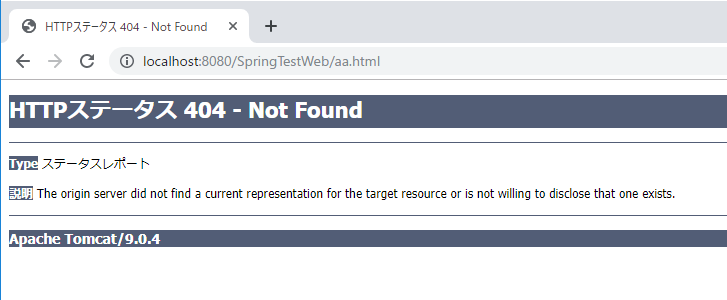
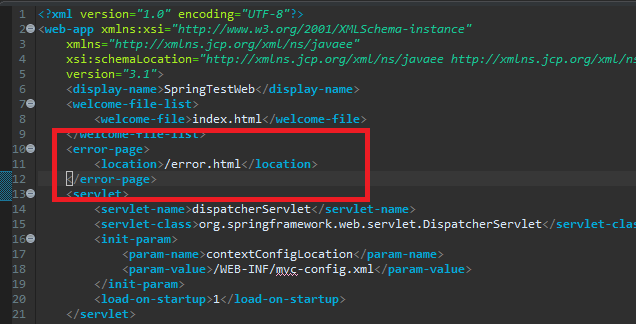
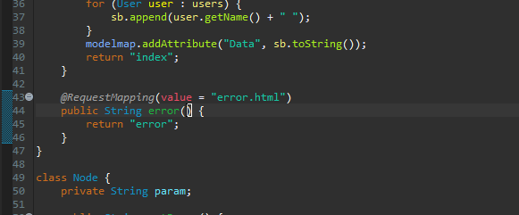
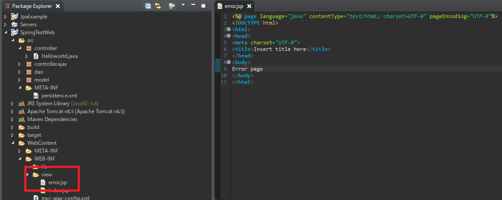
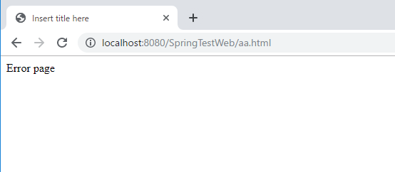
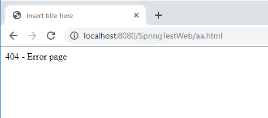
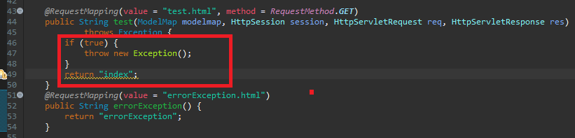
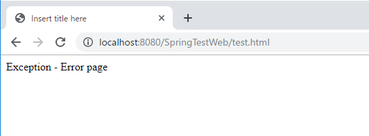

[Java] Web serviceのweb.xmlでエラーページ設定
こんにちは。明月です。
前述で「Spring framework」を設定するため、「web.xml」を設定したことがあります。
link - [Java スタディ - 35] EclipseでSpring web frameworkを利用してウェブサービスプロジェクトを立ち上がる方法
そろそろプロジェクトの最後の段階ですね。「error」ページのredirect設定する方法ですね。
我々が「WebService」の初期設定でプログラムを作成してエラーが発生する時に表示されるページは下記とおりになります。

でも実際に本番サービスで上のイメージみたいにエラーメッセージがでると困りますね。
エラーメッセージがちゃんと出ることでは問題ないですが、なにかプログラムが完成してない感じなので何かシステム不安感ができますね。
<error-page>
<location>/error.html</location>
</error-page>
「web.xml」設定ファイルでエラーが発生するとurlを決めることが出来ます。

「errer.html」ページの「Controller」と「View」を追加しましょう。


また、エラーを発生しましょう。

おー、エラーページを我々が設定するようになりました。
そうするとエラーコードによって設定も可能です。
<error-page>
<error-code>404</error-code>
<location>/error404.html</location>
</error-page>

「404」エラーになると別途のページにredirectしました。
エラーコードではなく、「Exception」別でページを分けることも出来ます。
<error-page>
<exception-type>java.lang.Exception</exception-type>
<location>/errorException.html</location>
</error-page>

今回はわざわざExceptionを発生しましょう。

エラーページ設定はすごく簡単ですが、以外に忘れやすい部分ですね。この部分まで細かく設計してもっと完成されるプログラムにならなければならないですね。
添付 -  SpringTestWeb.zip
SpringTestWeb.zip
link - https://stackoverflow.com/questions/2956167/how-can-i-catch-all-errors-to-same-page-from-web-xml
- [Java] Java servletでインスタンスを初期する方法2019/10/17 07:15:48
- [Java] Spring web frameworkで発生する文字化けのEncoding設定2019/10/16 07:32:55
- [Java] Web Spring frameworkでfilter設定2019/10/15 20:12:35
- [Java] Web serviceのweb.xmlでエラーページ設定2019/10/14 20:13:44
- [Java] JPAのDAOをFactoryパターンで管理する方法2019/10/13 22:55:52
- [Java] JPAのSpring frameworkで依存性注入する方法2019/10/13 00:40:08
- [Java] JPAでDAOを生成する方法2019/10/11 07:30:14
- [Java] JPAでトランザクションの使用方法とオブサーバーパターンで共通トランザクション関数を作り方2019/10/10 07:29:43
- [Java] JPAのQuery を作り方2019/10/09 07:34:08
- [Java] JPAのEntityクラス設定(Cascade, fetch)2019/10/08 07:43:33
- [Java] JPAでpersistance.xml設定とentityクラス設定(@GeneratedValue設定)2019/10/07 07:38:13
- [Java] EclipseでJPAフレームワーク設定する方法2019/10/04 19:24:43
- [Java] Web spring frameworkのJSPで使う言語 JSTL - XML2019/10/03 20:02:06
- [Java] Web spring frameworkのJSPで使う言語 JSTL - 関数、データベース2019/10/02 21:00:22
- [Java] Web spring frameworkのJSPで使う言語 JSTL - コアー、フォーマッティング2019/10/01 21:48:08
- [C#] HttpWebRequestを利用してウェブページを読み込みする方法2020/03/27 00:23:19
- [C#] Base64のエンコード、デコードする方法2020/03/26 02:19:50
- [Java] 日付フォーマット(SimpleDateFormat)を使う方法2020/03/25 00:36:53
- [Java] サーブレット(Servlet)の環境でファイルアップロード(プログレスバーでファイルアップロード状態を表示する方法)する方法2020/03/24 00:48:21
- [Java] Spring環境でファイルアップロード(プログレスバーでファイルアップロード状態を表示する方法)する方法2020/03/22 23:15:12
- [Java] FTPに接続してファイルをダウンロード、アップロードする方法(FTPClient)2020/03/20 02:44:36
- [Window] WindowでFTPサーバを構築する方法2020/03/19 03:27:22
- [Java] JSPのSpring環境でschedulerのcronを使う方法2020/03/18 00:24:32
- [Java] POIを利用してExcelを扱う方法2020/03/17 01:48:00
- [Java] PDFを出力する方法(itextpdf)2020/03/13 00:47:31
- [Java] ログライブラリ(log4j)を使う方法2020/03/12 00:54:39
- [Java] Jsonタイプのデータを使う方法(Gsonライブラリ)2020/03/11 00:30:15
- [Java] Base64をエンコード、デコードする方法2020/03/09 10:24:01
- [Java] cmdコマンドを実行するための方法2020/03/06 18:01:10
- [Java] メール(javax.mail)を発送する方法2020/03/05 20:07:49